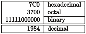

Writing technical papers with Markdown and Pandoc
markdown, pandoc, papers, writing, academic, scholarly, technical, scientific
You can view this post in the following formats, thanks to Pandoc!
| Format | Link |
|---|---|
| IEEE-PDF | LINK |
| IEEE-DOCX | LINK |
| IEEE-HTML | LINK |
| LINK | |
| DOCX | LINK |
| HTML | LINK |
| SLIDES-PDF | LINK |
I’ve had several people ask me about Markdown for academic writing recently. I figured I’d use this post to write about my workflow and my resources on this topic.
Why Markdown
Academic writing involves:
- writing down ideas as they come along and documenting results (notetaking),
- experimenting with these ideas (simulations and data analysis),
- and finally presenting them effectively (scientific paper).
There’s a lot to manage over the length of time this entire process spans. Academics require a set of tools that aid in making this process, i.e. the effective communication of ideas, as seamless as possible. There are currently two popular options for academics seeking to write technical papers - Microsoft Word or \(\LaTeX\).
A word about Word
Microsoft Word is ubiquitous when it comes to writing reports. The great thing about Word is that there is almost no barrier to begin writing. You can incrementally build your skill in using this tool as and when you are using it. This is useful since it makes it immediately accessible, thereby decreasing the time and effort spent on learning how to use a software for writing and allowing you to concentrate on the writing itself.
However, I’ve found a few fundamental problems with Microsoft Word. Having a WYSIWYG (What You See Is What You Get) editor is great (even Richard Stallman seems to think so [1]). However, products like Word fail miserably at separating content from formatting. These products impose on the writer their own concept of how a document should be formatted, which I’ve found greatly hinders the writing process. Have you ever experienced a sudden jump in spacing? Or mismatched formatting after a copy and paste from one part of the document to another? Or have indents and bullet points misbehave haphazardly? Word applies these formatting changes seemingly at random! These are all typesetting and formatting processes and these should be applied after the text is completed. These processes should not distract from the task at hand1 - writing!
1 I understand that there may be more correct ways to go about it, I just don’t want to be thinking about all that while I’m writing.
There are other issues as well. Microsoft’s ecosystem comes at a price, literally. Word is proprietary, and Word’s format is a proprietary data format. When you use Word, by storing your work in this proprietary software’s proprietary data format, you tie yourself down to this particular licensed software for the forseeable future. You also make the implicit assumption that everyone you work with has the same software on their computer. Word also does not play well with its counterparts on OSX. With the same content, the document is presented differently depending on which machine you open it on. As far as I know there isn’t even a version for Linux machines. Heck, Microsoft Word does not even play well with previous versions of Microsoft Word. I understand why this issue occurs, considering the complexity in operating systems and software. Backward incompatible software or cross incompatibility are probably inevitable, but as an user, I shouldn’t have to be concerned about this. I shouldn’t have to think about what software or what version of a software my reviewers are using when I’m sending them a document. And speaking of sharing documents, did you know you can end up transferring malware through a Word document? Just think about that for a second. Opening what should be essentially a text file is a security risk for your machine. And some of these viruses (as of the time of this writing) do not even have patches yet [2]. Loads of people have already talked about this and similar issues at some length [3], and have probably done more justice to this topic that I possibly could. With all these issues, it is hard to believe Word is so widely accepted as a standard.
I think there is a strong case to be made about why you should consider dropping Word for your next paper. In addition to what has been discussed above:
- Word is slow, and consumes sometimes up to a gig of virtual memory. For what is basically a word processor, that is unnecessary.
- there is no clean way to permanently save comments or notes, that persist in the final version without affecting how final document looks.
- collaborating with other people requires foresight and planning.
- the equation editor is painful to use.
- Word does not work in the workflow for scientific research papers or reports.
Let us assume that scientific research papers consists of only 3 steps (if only!) - notetaking, analysis and presentation. Word fails at delivering at all these tasks. Word doesn’t quite work for notetaking. Org mode, Evernote or Onenote are most people’s preferred solution. Word doesn’t fit data analysis requirements as well, with Python, R or Excel being the go-to tools. I personally use Emacs / Vim for notetaking and store them in a git repository and all of my data analysis is done in Jupyter Notebooks. After collecting the required data from an experiment and post-processing it, I can save plots into an image or the data into a table in a particular format programmatically using scripts. Word however, does not allow me to import these images or tables programmatically. If I did somehow manage to contort my workflow and store my data and information in this software, I have absolutely no way of retrieving it. The final presentation/report/paper, information and data will exist confined in this closed source proprietary software. Word just does not fit into an analysis or research workflow. To quote Raymond Hettinger:
\(\LaTeX\) - lah-tekh, lah-tek or lay-tek
Enter \(\LaTeX\).
\(\LaTeX\) is to a book what a set of blueprints is to a building. [4]
\(\LaTeX\) is a typesetting system and is frequently used in scientific, technical and mathematical papers. It is infamous for displaying equations in a manner that looks great. Math is beautiful, and it deserves to be presented beautifully.
\[\begin{align} \hskip6em \nabla \times \vec{\mathbf{B}} -\, \frac1c\, \frac{\partial\vec{\mathbf{E}}}{\partial t} & = \frac{4\pi}{c}\vec{\mathbf{j}} \hskip6em \\ \nabla \cdot \vec{\mathbf{E}} & = 4 \pi \rho \\ \nabla \times \vec{\mathbf{E}}\, +\, \frac1c\, \frac{\partial\vec{\mathbf{B}}}{\partial t} & = \vec{\mathbf{0}} \\ \nabla \cdot \vec{\mathbf{B}} & = 0 \end{align}\]
Essentially, \(\LaTeX\) is a markup language. Content is written in plain text and can be annotated with commands that describe how certain elements should be displayed.
For example, take a look at the following commands.
\textbf{bold}
\textit{italic}This markup will format the words passed into these functions
as bold and italic respectively.
There are numerous similar functions for different aspects of formatting. This allows you to concentrate on writing, without worrying about the typesetting until later.
The source document that contains the content is a plain text file. This means you can use git to version control the paper. This allows you to track changes and collaborate with others without any additional effort. This also lets you work with your favourite text editor - Vim, Emacs, Atom. There are even TeX specific ones, such as TeXShop and Lyx.
\(\LaTeX\) is free. Free as in beer and free as in freedom. You can have the confidence that your code and documents can survive possibly forever in its current format. The \(\LaTeX\) community is great and are very helpful towards beginners. There are hundreds of packages that improve upon the functionality that \(\LaTeX\) provides. There are packages like TikZ that let you to create high resolution print quality detailed diagrams, which I’ve seen used even outside a \(\LaTeX\) environment.
However, there is a barrier to entry which one must overcome in order to begin using \(\LaTeX\). Unlike Word, you have to know which commands are used for what markup functionality, not only to know when to use them, but also when not to use them. The biggest problem with \(\LaTeX\) is probably the error messages. Most of the time they are near useless, and sometimes they are even borderline cryptic.
Personally, I found learning how to work with \(\LaTeX\) extremely useful. It challenged me to think about the structure of a document, and how I could convey information effectively not just through the final document, but also in the source material2. I also didn’t think it was difficult. Solutions to my initial problems were only a quick Google search away. Tables were frustrating at first, but you get the hang of them over time. Equations are a joy to type in \(\LaTeX\). And the final product looks great!
2 Having the ability to leave comments to myself or fellow collaborators that are filtered out of the final presentation can be very useful.
That said, the markup language is a bit too heavy for notetaking, and not particularly readable. For example, take a look at the syntax for a creating a section, a subsection and list of items with some bold and italic elements.
\section{Section Name}
This is text in the section
\subsection{Sub Section Name}
The following is a list in this subsection
\begin{enumerate}
\item The first \textbf{bold} item
\begin{enumerate}
\item Nested item 1
\item Nested item 2
\end{enumerate}
\item The second \textit{italicized} item
\item The third etc \ldots
\end{enumerate}With good IDEs for \(\LaTeX\) this isn’t as bad as it looks, although they still hinder the writer’s flow. Over time and with experience, one can become proficient in \(\LaTeX\). And once you invest the time to learn \(\LaTeX\) I can’t think of any reason why you would go back to Word. But it is likely that beginners will have a hard time getting started. So, if you cannot afford to experiment with \(\LaTeX\), are you resigned to Word? I don’t think so. Markdown to the rescue!
Markdown
Markdown is a very lightweight easy-to-read easy-to-write plain text markup language. The same example as before looks like this in Markdown.
# Section Name
This is text in the section
## Sub Section Name
The following is a list in this subsection
- The first **bold** item
- Nested item 1
- Nested item 2
- The second _italicized_ item
- The third etc ...Much better! It’s a lot easier to read and a lot easier to write than \(\LaTeX\). Markdown, developed by John Gruber, was principally written for the web, to avoid the heavy markup of HTML. Tools have been developed to convert Markdown to HTML, PDF and even DOCX.
The main advantages of Markdown:
- Easy: the syntax is simple
- Fast: the simple formatting saves time and speeds up workflows of writers
- Portable: documents are cross-platform by nature
- Flexible: HTML, PDF, DOCX, TEX are all supported output formats
Markdown is awesome at a set of things, and a much better alternative than Word or \(\LaTeX\) for those specific set of things. Take for example this table Table 2.
| Right | Left | Center | Default |
|---|---|---|---|
| 12 | 12 | 12 | 12 |
| 123 | 123 | 123 | 123 |
| 1 | 1 | 1 | 1 |
This is what the same table looks like in \(\LaTeX\).
\begin{longtable}[c]{@{}rlcl@{}}
\caption{Demonstration of simple table syntax.}
\tabularnewline
\toprule
Right & Left & Center & Default\tabularnewline
\midrule
\endfirsthead
\toprule
Right & Left & Center & Default\tabularnewline
\midrule
\endhead
12 & 12 & 12 & 12\tabularnewline
123 & 123 & 123 & 123\tabularnewline
1 & 1 & 1 & 1\tabularnewline
\bottomrule
\end{longtable}However, Markdown does not allow for the level of detailed customization that you can achieve using \(\LaTeX\). Even a moderately complex table such as the one below is not supported (currently) by any form of Markdown.

Markdown may not be as powerful as \(\LaTeX\), but its easy to write easy to read syntax, open standard format and a strong backing from the community make it a ideal candidate for writing. It has the advantages of Word (ease of use) and \(\LaTeX\) (excellent typesetting) for output formats. Also there is the added advantage of only having to write in Markdown once, and have documents generated in a multitude of formats later - PDF, DOCX, slides, HTML etc.
I hope that by now you are convinced that Markdown is a great tool for writing. In the following sections we will look at how to convert a Markdown file to other formats, and what are some potential limitations and how you might overcome them.
Pandoc - A swiss army knife
Pandoc is a software tool by John Macfarlane written in Haskell that can convert a document from just about any format to just about any other format. And works really well.
Input formats:
- native (native Haskell)
- json (JSON version of native AST)
- markdown (pandoc’s extended Markdown)
- markdown_strict (original unextended Markdown)
- markdown_phpextra (PHP Markdown Extra)
- markdown_github (GitHub-Flavored Markdown)
- commonmark (CommonMark Markdown)
- textile (Textile)
- rst (reStructuredText)
- html (HTML)
- docbook (DocBook)
- t2t (txt2tags)
- docx (docx)
- odt (ODT)
- epub (EPUB)
- opml (OPML)
- org (Emacs Org mode)
- mediawiki (MediaWiki markup)
- twiki (TWiki markup)
- haddock (Haddock markup)
- or latex (\(\LaTeX\))
Output formats:
- native (native Haskell)
- json (JSON version of native AST)
- plain (plain text)
- markdown (pandoc’s extended Markdown)
- markdown_strict (original unextended Markdown)
- markdown_phpextra (PHP Markdown Extra)
- markdown_github (GitHub-Flavored Markdown)
- commonmark (CommonMark Markdown)
- rst (reStructuredText)
- html (XHTML)
- html5 (HTML5)
- latex (\(\LaTeX\))
- beamer (\(\LaTeX\) beamer slide show)
- context (ConTeXt)
- man (groff man)
- mediawiki (MediaWiki markup)
- dokuwiki (DokuWiki markup)
- textile (Textile)
- org (Emacs Org mode)
- texinfo (GNU Texinfo)
- opml (OPML)
- docbook (DocBook)
- opendocument (OpenDocument)
- odt (OpenOffice text document)
- docx (Word docx)
- haddock (Haddock markup)
- rtf (rich text format)
- epub (EPUB v2 book)
- epub3 (EPUB v3)
- fb2 (FictionBook2 e-book)
- asciidoc (AsciiDoc)
- icml (InDesign ICML)
- slidy (Slidy HTML and javascript slide show)
- slideous (Slideous HTML and javascript slide show)
- dzslides (DZSlides HTML5 + javascript slide show)
- revealjs (reveal.js HTML5 + javascript slide show)
- s5 (S5 HTML and javascript slide show)
With 21 input formats and 37 output formats, it doesn’t take long to guess that there’s no way they implemented a converter for each input to output format. Pandoc employs a Abstract Syntax Tree (AST) structure as an intermediate stage to convert one format to another3. This is the reason Pandoc is great at converting from and to a wide variety of formats, and why it is potentially easy to support new formats as well. Pandoc is also constantly under development. We can use Pandoc to convert a markdown file, to a PDF, HTML or DOCX file for a technical paper.
3 Understanding this will be important if you want to write your own custom filters. We will talk about that in the next section.
4 If you install Pandoc from a package, pandoc-citeproc should come pre-installed. However, if you want to use a package manager such as brew, you may need to install pandoc-citeproc separately as well. Just run brew install pandoc pandoc-citeproc.
First off, you will need pandoc. You can get the latest version from their GitHub page [6]. You may want pandoc-citeproc as well4. You will also need \(\LaTeX\). I’ve found that the following python packages are useful too.
pandoc-attributespandoc-eqnospandoc-fignospandoc-tablenospandocfilters
You can run pip install <package-name>. Alternatively you can create a virtual environment using conda with a suitable environment file [7], which is the approach I recommend [8].
There are several people that have shared their complete workflow along with all their resources [9]–[12]. Mine is available on GitHub [13] as well. While someone else’s workflow will work for you, I encourage you to start from scratch and craft your own. That way you will figure out why each item has been added into a workflow, and if that works for you. You will also know what to do if (when?) it breaks, and how to fix it. Feel free to go through other people’s Makefiles to see what they have done, and how you can improve your own.
Syntax
Headings
# Section
## Sub Section
### Sub Sub SectionExample
I’ve not provided an example here to avoid messing with this document’s headings.
Text
This text is in _italic_.
This text is in **bold**.
And this text is in **_bold-italic_**Example
This text is in italic. This text is in bold. And this text is in bold-italic.
Link
[Text](https://google.com)Example
Images
Example

Lists
- item
- item
- item
- item
1. item
1. item
1. item
1. itemExample
- item
- item
- item
- item
- item
- item
- item
- item
Quotes
> Research is what I'm doing
> when I don't know what I'm doing.
- Wernher von BraunExample
Research is what I’m doing when I don’t know what I’m doing.
- Wernher von Braun
Code
`inline code`
Tab space
for code blockExample
inline code
Tab space
for code blockTables
Right Left Center Default
------- ------ ---------- -------
12 12 12 12
123 123 123 123
1 1 1 1
: Demonstration of simple table syntax. {#tbl-table}Example
| Right | Left | Center | Default |
|---|---|---|---|
| 12 | 12 | 12 | 12 |
| 123 | 123 | 123 | 123 |
| 1 | 1 | 1 | 1 |
Citations
This is a very important fact [@citation_example]Example
This is a very important fact [14]
Strikethrough
~~Strikethrough text~~Example
Strikethrough text
Mark
==Mark text==Example
Mark text
Equations
Inline equations $\pi$
Block equations
$$
\pi
$$ {#eq-pi}
$$Example
Inline equations \(\pi\)
Block equations
\[ \pi \tag{1}\]
Pandoc conversion
Once you have typed all the content, you can use the pandoc command to convert the document into the format you want. Pandoc uses the output filename extension to figure out what the output file format should be. Btw, Pandoc is a command line tool only. You will have to use the command line for any conversion.
To generate a PDF file:
pandoc document.md -o document.pdfIt is as simple as that! To generate a HTML file:
pandoc document.md -o document.htmlCheck out pandoc’s README [15]. It has loads of examples and you might be able to find what you are looking for by straight up picking an example or by making a minor tweak to it.
With PDF files, you can specify the following additional arguments:
--latex-engine=pdflatex: latex engine--latex-template=latex.template: latex template file
This allows you to define a \(\LaTeX\) template to use. By default, pandoc uses a built in template.
With html files, you can specify the following arguments:
--template=html.template: html template file--css=cssfile.css: css file
With docx files unfortunately, you cannot specify a template (at least not at the time of writing this post) [16]. You can however, specify a reference-docx:
--reference-docx=reference.docx: docx for reference styles
These following arguments allow you to use citations when writing academic papers.
--filter pandoc-citeproc: filter to parse citations--csl=CSLFILE: define a citation style sheet e.g. ieee.csl--bibliography=BIBFILE: look for citations from a bibliography
Pandoc will find the appropriate citation from a .bib file and add it to your Bibliography according to the style sheet you specify. It works great and I’ve had no issues with it so far.
Also, I’ve found the following filters useful.
--filter pandoc-eqnos: equation numbers--filter pandoc-fignos: figure numbers--filter pandoc-tablenos: table numbers
They allow you reference a figure, equation or table. For example, Equation {Equation 1} is an example of a block equation in Markdown.
A paper may be generated using a command as shown below:
pandoc -s -S --latex-engine=pdflatex \
--template=./templates/ieee-latex.template \
--filter pandoc-fignos \
--filter pandoc-eqnos \
--filter pandoc-tablenos \
--filter pandoc-citeproc \
--csl=./styles/ieee.csl \
--bibliography=./bib/research.bib \
-o ieee-paper.pdf paper.mdAs you can see, there are a lot of arguments that can be passed to Pandoc. I’ve found using Makefiles for recording your past commands and documenting these instructions extremely useful. I’ve barely scratched the surface with what you can do with Pandoc. I’ll update this post with more features if I think they are relevant to writing a paper using Markdown.
Downside to using Markdown?
Pandoc allows you to define \(\LaTeX\) blocks in a markdown file, which are passed straight through to \(\LaTeX\) without any change. \(\LaTeX\) then processes it and renders it correctly. Which means if you want to generate a PDF, you are in luck! You have the entire arsenal of \(\LaTeX\) commands at your disposal.
However, when converting to html or docx files, pandoc will choose to remove \(\LaTeX\) blocks. There is a workaround for equations. You can specify --mathjax and force Pandoc to attempt to render \(\LaTeX\) as mathjax, which works most of the time. This page for example was generated entirely from a markdown file, rendered to html using pandoc. I have found a few cases where mathjax did not work correctly for me, so there may be some experimenting involved. With DOCX, you can pass in the --mathjax flag, and Pandoc will convert it to Word’s equation editor format, but this seems to work only with the certain set of the markdown equation syntax that pandoc supports. In the case of tables, it is Markdown or bust. You have to format it in the Markdown table format that pandoc supports if you want a HTML or DOCX output.
The good news is that anything you do in \(\LaTeX\), you can do in Markdown and render as a PDF. This includes equations, tables, citations, references, images, lists, tikz diagrams etc. The bad news is that if you do decide to use \(\LaTeX\) syntax, you are still writing \(\LaTeX\) (although a lot less of it), and you have lost complete HTML and DOCX conversion capability.
Also, Markdown / Pandoc does not support splitting the source document across multiple files. This was not as much a deal breaker for me, since the markup is pretty light and having it all in a single file is fine for a technical paper. However, for large reports extending hundreds of pages this may be a issue. There are workarounds for this (see next section), however they may be a bit of a hassle.
Bending Markdown to your will
Fortunately, some of the problems I mentioned in the previous section can be solved using an excellent feature of Pandoc - filters!
You can write your own custom filter, and you can use it to parse certain blocks in a custom fashion. For most people this will not be necessary since Pandoc is feature complete, and when a specific need arises6 the community has often provided a custom filter that does the job. But if you come across a case where pandoc does not do what you want it to do, you can write a filter for it.
There is a python package called pandocfilters that allows you to walk the AST and parse specific formats or keys. It is very powerful, and can offer unique ways to expand on pandoc’s functionality. I wrote a pandocfilter [7] to embed a jupyter notebook using a liquid tag style syntax, which I currently use for this post.
In theory, you can write a filter that finds a \(\LaTeX\) table block in Markdown, converts it to an image and renders that in Word. Or you can write a filter that inputs other files during run time, allowing you to split your source document.
My understanding is that the Python pandocfilters package is limited in scope. Alternatively, if you choose to, you can yield Pandoc’s complete power by writing a Haskell filter instead of using Python, but then you will be writing Haskell ;)
I would tag the custom filters functionality I’ve described in this section as an advanced feature. I’ve not had to write my own filter for writing a technical paper (so far). Know that they are there when you need them.
TLDR
You can write a complete paper in Markdown and render it in PDF without any issues. I recommend using Markdown and Pandoc for writing over \(\LaTeX\) and Word because of its ease of use and its flexibility and versatility. And if you think Markdown is not cutting it for you, you can always convert it to a Word document or a TEX file and continue using your usual workflow. Check out my attempt at describing the relationship between complexity of document and difficulty in implementing when using Word, \(\LaTeX\) and Markdown in Figure 1.

If you have gotten this far in the post, congratulations! This was a lot to take in, and I hope I shed some light on the potential for Markdown as an academic and technical writing tool. Let me know if you have any questions in the comments below.
$$
References
Reuse
Citation
@online{krishnamurthy2015,
author = {Krishnamurthy, Dheepak},
title = {Writing Technical Papers with {Markdown} and {Pandoc}},
date = {2015-12-20},
url = {https://kdheepak.com/blog/writing-papers-with-markdown/},
langid = {en}
}